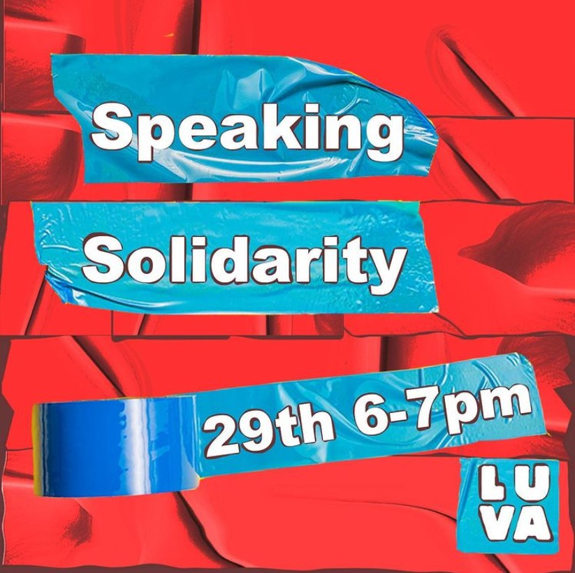
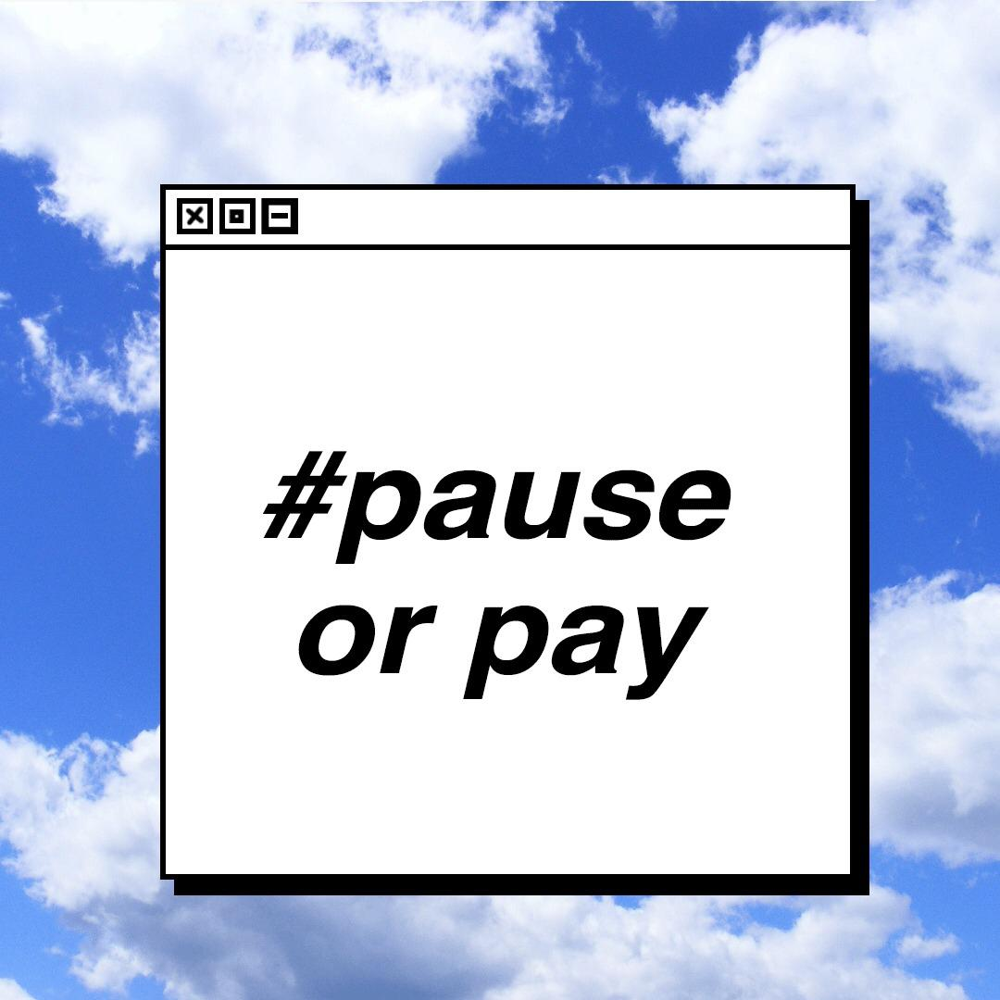
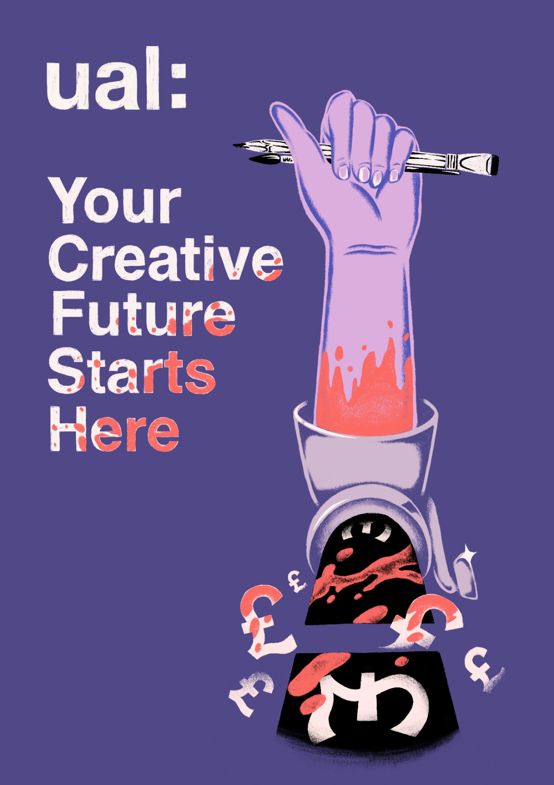
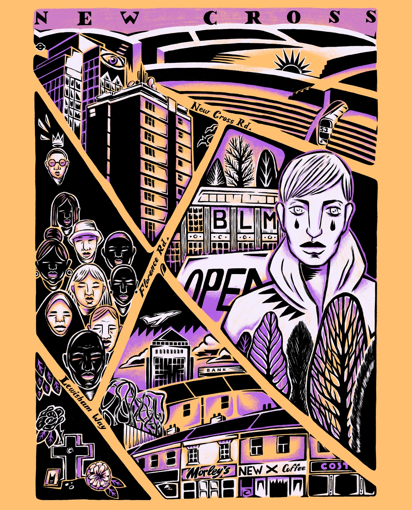
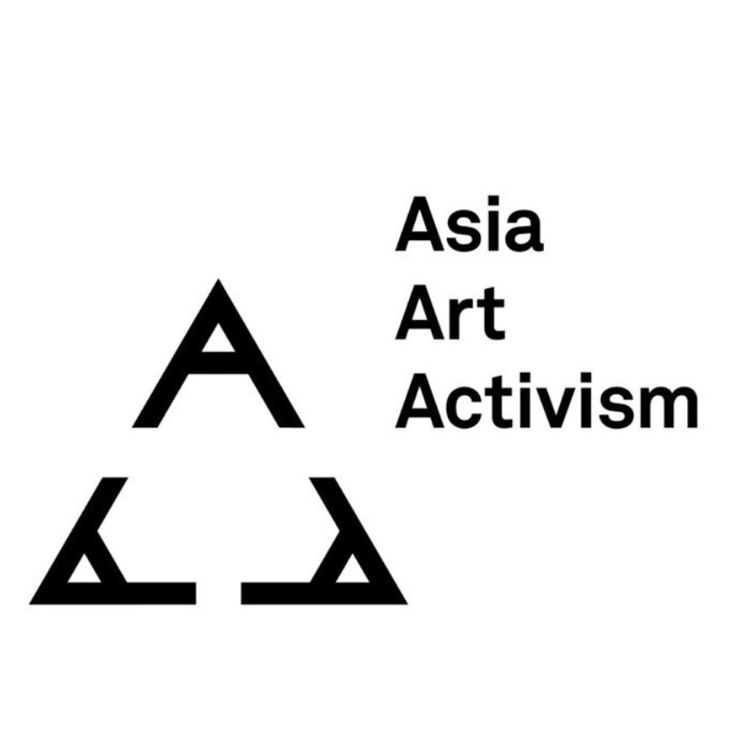
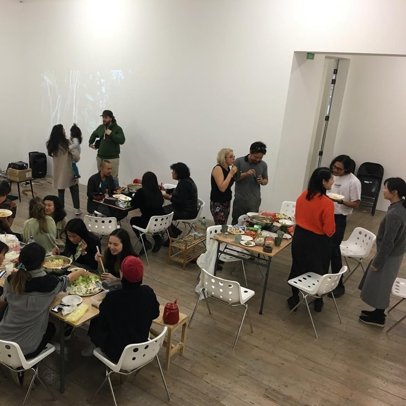
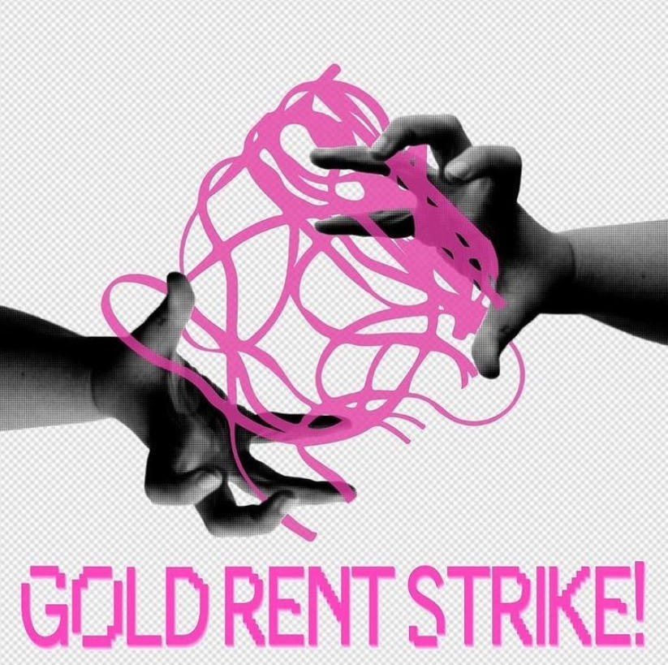

A panel discussion consisting of campaigners and activists from various action groups intersecting the
political and
creative spheres. With speakers including Henny Shaw from Pause or Pay, we will be discussing topics such
as: experiences in activism, how it can bring about change, digital vs physical activism and how to spread
the word.
As always there will be an opportunity for an open public discussion at the end if you would
like to get involved!

Henny is the national coordinator of Pause or Pay UK, and is currently studying Illustration in London. She
began working with Pause or Pay in November 2020 and has been primarily coordinating the Alternative
Platform team.
"Pause or Pay UK is a UK-wide cross-university action group led by students that emerged in
April 2020 in response to the disruption of studio-based learning by the pandemic. We’re aiming to
eventually convince our universities to lobby the government for a sector-wide bailout with this action."
Instagram: @pauseorpayuk
Website: pauseorpay.org


My name is Nikita Papucevics, and I am a South London based queer artist and illustrator currently studying
at
Camberwell College of Arts. My art is all about my personal live and surroundings and is what I use to
communicate with the world. I am also interested in art education and it's alternative solutions as well as
activism and politics as form of art!
Instagram: @papucevics


"We are a cross-disciplinary and intergenerational network of artists, curators and academics investigating
‘Asia’, ‘art’ and ‘activism’ in the UK through research, dialogue, practice and collective work.
We seek to open up a conversation around ‘Asia’ as a contested paradigm, including its diasporas, migrant
and resident communities, to attend to lesser known narratives of Asian artists and activists in the UK,
especially that of Southeast Asian communities.”
Instagram: @asia.art.activism

“Students are taking action against the University (Goldsmiths) and private accommodation halls over moldy
rat infested
flats, a failure to deal with the institutional racism of the university, the underfunding and accessibility
of mental health services, not dealing with sexual assault. All this while paying exploitative rent which
low income students are struggling to meet. While we are taking action this year, we want to stress that
these problems are part of larger issues that must be addressed, such as the marketization of education,
lack of democracy within the university, institutional racism at our uni, and so much more”
Instagram: @goldrentstrike